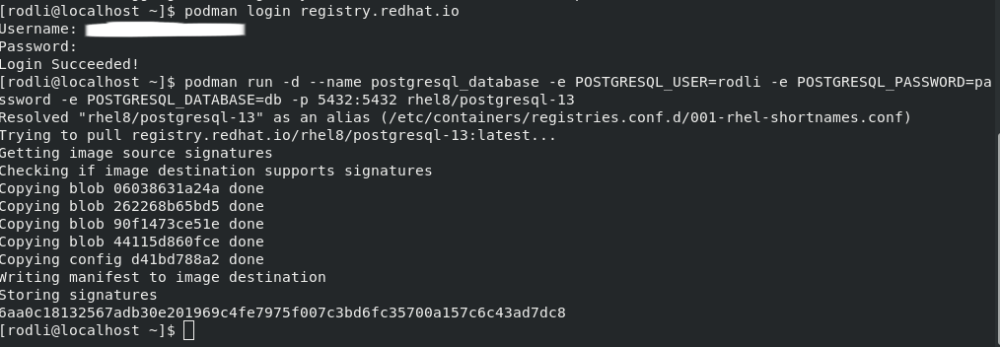

Create a psql container using Podman
Login to a container registry
Create a container using podman run

Verify container exists
Create a database
Check existing databases
Create a database
Create a table
Insert data into table